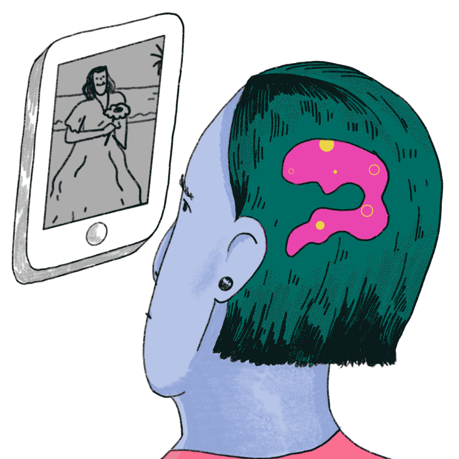

“Sex has become one of the forces shaping information technology.” - Frederick E. Allen, Why Sex Drives Technological Innovation

One of the most openly researched narratives around sexuality and information technology is the release of hormones that occurs during interactions between users and their everyday devices. The dopamine-feedback loop sparked by a text message ding or a phantom vibrate relies on our subconscious physiological response to a pleasurable experience that motivates us to continue to seek out this interaction. This response is inclusive of the release of the hormone palette oxytocin and dopamine, similar to that of having an orgasm. However, stories such as Mistress Harley’s include instances of people associating feelings of pleasure with their technologies beyond a subconscious chemical release, but rather projecting deeper emotional feelings and sexual desire onto everyday machinery whose purpose is not inherently sexual. This new subset of behaviors is also inclusive of desire towards the actual physical devices themselves, not just the personal data that exist on them.
It is important to note one of the lesser researched conversations around sexuality and technology does cover a few cases of machine fetishes. In Biophilia - The Human Bond with Other Species, Edward O.Wilson describes a type of fetish called mechanophilia, which is the love of or sexual attraction to machines. This type of attraction is most often discussed in science fiction or art and, in rare instances, a diagnosis given to people. In the niche world of mechanophilia, Psychology Today notes attraction is seen frequently towards domestic appliances and automobiles and pleasure is derived from various facets including “the engineering aspect of their object, how it works, moves and is built or the effect it produces, for example the noise and warmth that comes off of a drying machine.”12 While acknowledging this fetish exists, it doesn’t fully explain a widening sect of people associating intimate feelings with their everyday information technologies.
First Comes Intimacy,
Then Comes Pleasure
"Intimacy is hypothesized to serve both as a trigger for sexual desire and as a reward resulting from the experience of sexual arousal and—in particular—of orgasm." - The Journal of Social and Personal Relationships

Exactly how has big tech gotten us to this state of technology-derived desire? Considering the role of intimacy as related to the design of everyday technologies allows us to start to understand the pleasure gleaned from the manipulation of our computers and digital lives. In the Journal of Social and Personal Relationships, research has shown that for both men and women in long-term relationships “the experience of emotional intimacy plays a particularly large role in [triggering] sexual desire.”1 Let’s take the laptop for example, a long-term partnership that much of the world has taken part in. Holly Herndon, an artist and scholar who has begun to expose how sensual and intimate the relationship is between users and their everyday technologies, puts it best. She describes the laptop as “the most intimate instrument that we’ve ever seen. It’s a surface that’s as familiar as our own flesh, a thing that we entrust with our secrets and memories, a machine that we fall asleep cradling.”8
One proposed explanation for the high level of intimacy and positive feelings we associate with our devices is our ability to operate these tools without conscious thought as if [they] were a part of our bodies. Scholar George Bastille writes, "some technologies have certain qualities that allow them to disappear from consciousness through use, that is, by becoming transparent or intimately connected. This intimacy implies a user ignorant of the inner components and manufacturing process, but entirely familiar with use. With total familiarity, technological objects recede into the background of consciousness and become nothing, but extensions of our body."1
The definition of intimacy and technology as put forth by Bastille is directly correlated to the ubiquitous western corporate design mantra of making everything frictionless, the goal of design being for consumers to use digital devices without conscious thought. “A frictionless life is the tacit promise of many of the last decade’s most disruptive technologies companies, which are longing for a sexy, seamless world.”11 It is in part this sexy seamlessness that has allowed ubiquitous technologies like our cell phones and laptops to slip into the role of our most intimate companions and subsequently objects of sexual desire. Sherry Turkle notes because of this “it’s not surprising that we project the possibility of love, surprise, amusement, and warmth onto our communication devices.”15 The intimacy designed by way of frictionless design has led to a reprogramming of what turns us on and has driven, in part, the projection of sexual desire onto our devices.
The Device Caress
“I am not sure about swiping, but there was always something intimate and also sexual about touching. Think of caressing. Think of how you caress your phone. Think of the intimate space that is created between the back of your screen and the curve of your palm.” - Theo Triantafyllidis, How to Everything
This tech-derived pleasure is not only psychological and physiological but physical as well. Enter the mouse, a crucial predecessor and informant to the now ubiquitous touch screen.
Designed by Douglas Englebart and originally referred to as the “bug,” the mouse was created to find new ways to control the computer, but more so “it [was] a computing device developed in [direct] relation to the body,”2 with a strong emphasis on tactility, materiality and visual metaphors. Ali Na in the The Fetish of the Click: A Small History of the Computer Mouse as Vulva, shares her thesis on the form and function of the mouse in an effort to highlight the “importance of materiality and power embedded in an object.”2 She compares the computer mouse to “a vulva in form, with a likened curvature, a separation of click-able buttons (lips), and a rolling, silicone-soft clickable clitoris.”2 She further comments that the vulva mouse shifts our attention “to the intimacy of touching, entangled in fluid movements”2 stimulating tech-driven pleasure. The vulva-metaphor has not been lost on designer Andy Kurovets, who later designed the
G-spot mouse, shaped not-so-subtly like a vagina with the clitoris as the scroll button and the g-spot as quick access to the user’s favorites page. The mouse also further reifies the history of intimacy as driven through the design of a frictionless and invisible relationship with our corporate technology products. The sensations of touch and intimacy designed into the mouse have been linked to its design “as constructed in a movement toward invisibility, toward an ergonomic and naturalized-prosthetic understanding of the mouse.”2
The mouse (“a mundane object of everyday computing elevated to a fetish object with attachments to the genitalia”2) has ushered in a similar tactile, fetishized relationship with our current touch screen devices. The popularity of the touch screen derives in part from similar haptic pleasures that come from tapping and swiping the screen. However, the sensorimotor processes designed into the touch screen are far more muted than those designed into the mouse. In the book Design, User Experience and Usability, the authors note “the touch that is designed into our devices has been continually reduced to [screens] or [touch tablets] made of smooth material, which lacks of rich touch information”4 as compared to that of the mouse. Instead, in order to design greater efficiency and usability without conscious effort, technology interfaces and devices have continued to lose all friction associated with interaction. This muting of tactile feedback, however, is purposeful for the benefit of allowing for machines who can “through a screen, read our body language.”3 In the article Data Sweat, writer Amanda Greene notes, “our corporeal feelings migrate into digital information through the ways we literally touch our devices and look at our screens, creating exhaustive records of our lives that run alongside the ones we intentionally curate on social media. Acknowledging that digital exhaust creates uncannily enduring affective archives can reframe how we think about this data — and show how profoundly intimate it really is.”3
A Demanding Lover
“Here we go, now that actually is irony. Your computer turning you on.” - Anonymous, IWSMT
It is too early to categorize the full extent of the consequences of this new form of emerging desire, but early signals can begin to showcase a few places we should pay attention. The pleasurable tap and swipe or the slow drift-off-to-sleep cuddling our laptop has left many of us comfortably numb to how intimate our experiences are with everyday technologies. For Mistress Harley and her clientele, however, is it possible the corporate design of frictionless pleasure has actually culled the opposite response, creating a group of people who are longing to move beyond the easy, subconscious intimacy of our relationship with our products? Perhaps this exemplifies an early call for an alternate type of relationship with our technology that has qualities beyond easy and frictionless such as control, complexity or even pain.
In the latest and final edition of Secret Guide to Computers, 2007, eleven years before Mistress Harley, author Russ Walters writes about a relationship of device domination similar to one of sadomasochism. He notes, “Then the computer will demand you give it more. While you enjoy an exciting orgy with your computer and think it's the most joyous thing that ever happened to you, suddenly the computer will demand you buy it more memory. It'll refuse to continue the orgy until you agree to its demand. And you'll agree -- eagerly! The computer's a demanding lover. You'll feel married to it.”14 Demanding, sadistic computers? Walters and Mistress Harley’s clientele bring to light an unexpected consequence of the corporate design of intimacy-driven pleasure: a desire for a pleasurable pain, a shift in control, a re-writing of the design mantra of seamlessness that has been put into place. The sensations and behavioral responses that occur when interacting with our technology have perhaps become so numbing that there’s a craving for new forms of emotional interaction.
Mistress Harley Has
Consent to Surveil
“When technologies are disguised, or too easy to use, we forget their power. We lose track of how the logics and rhetorics of computing affect us.” - Sylvia Tomayko-Peters, Sexual Interfaces
The intimacy and pleasure curated through the design of our technology products simulates a false sense of physical and psychological control. Instead, this intimacy has altered our sense of criticality when interacting in the digital world. We’re in smitten lust, unable to see beyond the honeymoon phase. It has designed a false air of intimacy between users and their products, even to the extent of seeing their materiality as inherently being tied to sexual desire.
Mistress Harley’s clientele show us that in search of pleasure, clients will give unfettered access to their most personal information and the consent to manipulate their computers and digital worlds freely. While it is assumed that Mistress Harley is not helping herself to her clients personal information, this relationship is a metaphor for the consequences of this designed pleasure and intimacy on a grander scale. “We willingly offer our personal photos, opinions, and other information, because of the great pleasure it gives us. We enjoy sharing our lives with friends and family, and social media platforms are set up to deliver fast and quantifiable feedback from our followers that fires our dopamine centers”5. The deep intimacy between users and their devices has allowed corporations to pray on our vulnerability under the guise that users are in control.
In the case of the touch screen, we take the pleasurable sensations of swiping and scrolling at face value, rather than realizing that data is generated from the patterns of touch and minute body gestures we employ in these interactions. Ali Na warns against the idea of losing agency of understanding our technology as she writes about the move from mouse to touch screen. “It is important to avoid understanding this transition as one toward more direct or unmediated contact with the digital. The more direct the interface seems to ordinary users, the more likely they are to take it for granted and ignore how their experience is being mediated.”2 Artist Holly Herndon also refers to this violation of the intimacy and pleasure designed between us and our devices on her newest album PROTO. In one song “she imagines a relationship with an N.S.A. officer who spies on her through her laptop.”8 She writes about the inspiration for the song: “The ongoing NSA revelations have fundamentally changed this relationship. I entrusted so much in my device. To learn this intimacy had been compromised felt like a grand betrayal.”10
By designing a system of intimacy into our devices, big tech companies have created a collection of users seduced by their technology to the extent of projecting feelings of sexual desire onto our devices. The technology industry has inadvertently reprogrammed arousal, where rather than turning on the computer to visit one of the many readily accessible sex-related sites for entertainment, for some, just clicking the power button is enough. This new behavior is also leading us to have a weakened criticality as to how our pleasure is being commodified for corporate gain, through the tracking of our intimate gestures and our complicity in sharing personal information. It has also begun to expose a desire to move beyond technology as invisible and seamless and towards design that touches on a wider palette of the human emotional experience. This essay has not done justice to expansive stories related to the desiring of our devices, occuring in other parts of the world, prominently China. I've started a collection of links here for future exploration: Lick Your Screen, Sexualized Processors and Mac Fetishes. The complex emotional roller coaster between us and our devices follows a trajectory of intimacy to pleasure to emotional connection, covering all the bases of a romantic partnership. It’s hard to say exactly how this growing closeness will evolve, but it calls for pause the next time you wake up cuddling your laptop.
Trivial? I think not.
Notes
1. Alessandro Tomasi, “The Role of Intimacy in the Evolution of Technology,” The Journal of Evolution and Technology, vol. 17, no. 1, Jan. 2008, pp. 1–12.
2. Ali Na, “The Fetish of the Click: a Small History of the Computer Mouse as Vulva,” Feminist Media Studies, vol. 18, no. 2, Oct. 2017, pp. 221–234.
3. Amanda K Greene, “Data Sweat,” Real Life, 12 Aug. 2019.
4. Design, User Experience and Usability: User Experience in Advanced. Springer, 2019.
5. Eric, Schewe, “How Pleasure Lulls Us into Accepting Surveillance,” JSTOR Daily, 28 June 2018.
6. Frederick E Allen, “When Sex Drives Technological Innovation,” American Heritage, Sept. 2000.
7. Gimlet Media, “Trust the Process,” Reply All, 15 Feb. 2018.
8. Hua Hsu, “Electronic Pop for the Surveillance Era,” The New Yorker, 25 June 2019.
9. Jacques van Lankveld et al. “The associations of intimacy and sexuality in daily life: Temporal dynamics and gender effects within romantic relationships,” Journal of Social and Personal Relationships, vol. 35, 4 (2018): 557-576.
10. Jeremy Gordon, “Holly Herndon Breaks Up With the NSA in Video for New Song ‘Home,’” Pitchfork, 16 Sept. 2014.
11. Kelly Pendergrast, "Ill at Ease," Real Life, 28 May 2019.
12. Mark D. Griffiths, "Mechanophilia Exposed and Explained," Psychology Today, 17 Nov 2016.
13. Mistress Harley, Techdomme, Vol. 1, 2015.
14. Russ Walter, The Secret Guide to Computers, 2007.
15. Sherry Turkle, “Always-on/Always-on-you: The Tethered Self,” Handbook of Mobile Communication Studies, James E.Katz (ed.), Cambridge, MA: MIT Press, 2008.
16. Sylvia Tomayko-Peters, et al, “Sexual Interfaces: Understanding Human-Computer Interactions Through Digital Sex Devicesm, Bluestockings Magazine, 26 Aug. 2015.
17. Tim Adams, “Sherry Turkle: 'I Am Not Anti-Technology, I Am pro-Conversation',” The Guardian, 18 Oct. 2015.
18. Theo Triantafyllidis, "Touch/Screen Towards a New Sensory Awareness," How to Everything: A Comprehensive Guide, 2016.
19. Ziyu Hi, "[Cmd] [Cntrl]: Cyber Domination and Future Sexualities," ADJACENT Issue 4.